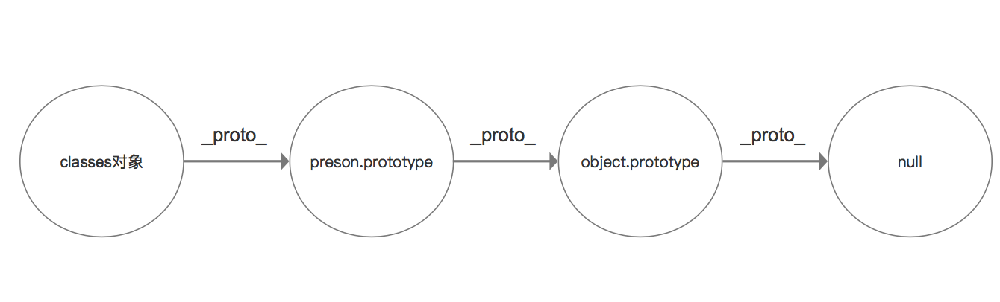
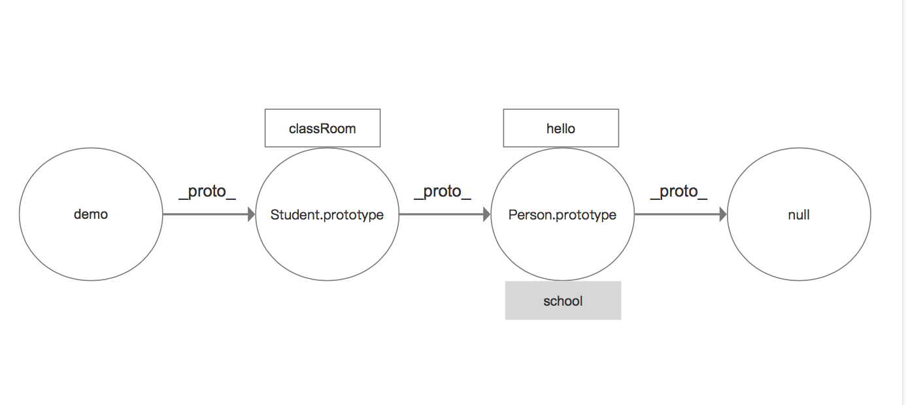

<!DOCTYPE html>
<html>
<head><meta name="generator" content="Hexo 3.8.0">
  <meta charset="utf-8">
  
  <title>重温oop之原型与继承 | guowj</title>
  <meta name="viewport" content="width=device-width, initial-scale=1, maximum-scale=1">
  
  <meta name="keywords" content="面向对象原型链继承">
  
  
  
  
  <meta name="description" content="&amp;nbsp;&amp;nbsp;&amp;nbsp;&amp;nbsp;&amp;nbsp;&amp;nbsp;JS 原型链与继承是 JS 中的重点，这篇文章将针对原型链和继承通过代码的方式略作总结。">
<meta name="keywords" content="面向对象,原型链,继承">
<meta property="og:type" content="article">
<meta property="og:title" content="重温OOP之原型与继承">
<meta property="og:url" content="https://gwjacqueline.github.io/重温OOP之原型链与继承/index.html">
<meta property="og:site_name" content="guowj">
<meta property="og:description" content="&amp;nbsp;&amp;nbsp;&amp;nbsp;&amp;nbsp;&amp;nbsp;&amp;nbsp;JS 原型链与继承是 JS 中的重点，这篇文章将针对原型链和继承通过代码的方式略作总结。">
<meta property="og:locale" content="zh-CN">
<meta property="og:image" content="https://gwjacqueline.github.io/images/prototype.png">
<meta property="og:image" content="https://gwjacqueline.github.io/images/inherit.png">
<meta property="og:updated_time" content="2019-04-21T11:54:39.000Z">
<meta name="twitter:card" content="summary">
<meta name="twitter:title" content="重温OOP之原型与继承">
<meta name="twitter:description" content="&amp;nbsp;&amp;nbsp;&amp;nbsp;&amp;nbsp;&amp;nbsp;&amp;nbsp;JS 原型链与继承是 JS 中的重点，这篇文章将针对原型链和继承通过代码的方式略作总结。">
<meta name="twitter:image" content="https://gwjacqueline.github.io/images/prototype.png">
  
    <link rel="alternate" href="/atom.xml" title="guowj" type="application/atom+xml">
  

  

  <link rel="icon" href="/css/images/mylogo.png">
  <link rel="apple-touch-icon" href="/css/images/mylogo.png">
  
    <link href="//fonts.googleapis.com/css?family=Source+Code+Pro" rel="stylesheet" type="text/css">
  
  <link href="https://fonts.googleapis.com/css?family=Open+Sans|Montserrat:700" rel="stylesheet" type="text/css">
  <link href="https://fonts.googleapis.com/css?family=Roboto:400,300,300italic,400italic" rel="stylesheet" type="text/css">
  <link href="//netdna.bootstrapcdn.com/font-awesome/4.0.3/css/font-awesome.css" rel="stylesheet">
  <style type="text/css">
    @font-face{font-family:futura-pt; src:url("../css/fonts/FuturaPTBold.otf") format("woff");font-weight:500;font-style:normal;}
    @font-face{font-family:futura-pt-light; src:url("../css/fonts/FuturaPTBook.otf") format("woff");font-weight:lighter;font-style:normal;}
    @font-face{font-family:futura-pt-italic; src:url("../css/fonts/FuturaPTBookOblique.otf") format("woff");font-weight:400;font-style:italic;}
}

  </style>
  <link rel="stylesheet" href="/css/style.css">

  <script src="/js/jquery-3.1.1.min.js"></script>
  <script src="/js/bootstrap.js"></script>

  <!-- Bootstrap core CSS -->
  <link rel="stylesheet" href="/css/bootstrap.css">

  
    <link rel="stylesheet" href="/css/dialog.css">
  

  

  
    <link rel="stylesheet" href="/css/header-post.css">
  

  
  
  
    <link rel="stylesheet" href="/css/vdonate.css">
  

</head>
</html>


  <body data-spy="scroll" data-target="#toc" data-offset="50">


  
  <div id="container">
    <div id="wrap">
      
        <header>

    <div id="allheader" class="navbar navbar-default navbar-static-top" role="navigation">
        <div class="navbar-inner">
          
          <div class="container"> 
            <button type="button" class="navbar-toggle" data-toggle="collapse" data-target=".navbar-collapse">
              <span class="sr-only">Toggle navigation</span>
              <span class="icon-bar"></span>
              <span class="icon-bar"></span>
              <span class="icon-bar"></span>
            </button>

            
              <a class="brand" style="
                 margin-top: 0px;" href="#" data-toggle="modal" data-target="#myModal">
                  
              </a>
            
            
            <div class="navbar-collapse collapse">
              <ul class="hnav navbar-nav">
                
                  <li> <a class="main-nav-link" href="/">首页</a> </li>
                
                  <li> <a class="main-nav-link" href="/archives">归档</a> </li>
                
                  <li> <a class="main-nav-link" href="/categories">分类</a> </li>
                
                  <li> <a class="main-nav-link" href="/tags">标签</a> </li>
                
                  <li><div id="search-form-wrap">

    <form class="search-form">
        <input type="text" class="ins-search-input search-form-input" placeholder>
        <button type="submit" class="search-form-submit"></button>
    </form>
    <div class="ins-search">
    <div class="ins-search-mask"></div>
    <div class="ins-search-container">
        <div class="ins-input-wrapper">
            <input type="text" class="ins-search-input" placeholder="请输入关键词...">
            <span class="ins-close ins-selectable"><i class="fa fa-times-circle"></i></span>
        </div>
        <div class="ins-section-wrapper">
            <div class="ins-section-container"></div>
        </div>
    </div>
</div>
<script>
(function (window) {
    var INSIGHT_CONFIG = {
        TRANSLATION: {
            POSTS: '文章',
            PAGES: '页面',
            CATEGORIES: '分类',
            TAGS: '标签',
            UNTITLED: '(无标题)',
        },
        ROOT_URL: '/',
        CONTENT_URL: '/content.json',
    };
    window.INSIGHT_CONFIG = INSIGHT_CONFIG;
})(window);
</script>
<script src="/js/insight.js"></script>

</div></li>
            </ul></div>
          </div>
                
      </div>
    </div>

</header>


      
            
      <div id="content" class="outer">
        
          <section id="main" style="float:none;"><article id="post-重温OOP之原型链与继承" style="width: 75%; float:left;" class="article article-type-post" itemscope itemprop="blogPost">
  <div id="articleInner" class="article-inner">
    
    
      <header class="article-header">
        
  
    <h1 class="thumb" itemprop="name">
      重温OOP之原型与继承
    </h1>
  

      </header>
    
    <div class="article-meta">
      
	<a href="/重温OOP之原型链与继承/" class="article-date">
	  <time datetime="2019-03-31T11:31:34.000Z" itemprop="datePublished">2019-03-31</time>
	</a>

      
    <a class="article-category-link" href="/categories/js/">js</a>

      
	<a class="article-views">
	<span id="busuanzi_container_page_pv">
		阅读量<span id="busuanzi_value_page_pv"></span>
	</span>
	</a>

      

    </div>
    <div class="article-entry" itemprop="articleBody">
      
        <blockquote>
<p>&nbsp;&nbsp;&nbsp;&nbsp;&nbsp;&nbsp;JS 原型链与继承是 JS 中的重点，这篇文章将针对原型链和继承通过代码的方式略作总结。</p>
</blockquote>
<a id="more"></a>
<h2 id="原型链"><a href="#原型链" class="headerlink" title="原型链"></a>原型链</h2><p>&nbsp;&nbsp;&nbsp;&nbsp;&nbsp;&nbsp;首先，我们通过 new 操作符创建对象的过程来说说原型链。</p>
<figure class="highlight plain"><table><tr><td class="gutter"><pre><span class="line">1</span><br><span class="line">2</span><br><span class="line">3</span><br><span class="line">4</span><br><span class="line">5</span><br><span class="line">6</span><br></pre></td><td class="code"><pre><span class="line">function Person(name) &#123;</span><br><span class="line">    this.name = name;</span><br><span class="line">    return name;</span><br><span class="line">&#125;</span><br><span class="line">let classes = new Person(&quot;Lucy&quot;);</span><br><span class="line">console.log(classes);  // person &#123;name: &quot;Lucy&quot;&#125;</span><br></pre></td></tr></table></figure>
<p>&nbsp;&nbsp;&nbsp;&nbsp;&nbsp;&nbsp;我们用代码的形式来解析下以上用 new 操作符创建实例的过程。</p>
<blockquote>
<p>1.var classes = {};&nbsp;&nbsp;&nbsp;&nbsp;//创建一个空对象<br><br>2.classes.<em>prop</em> = Person.prototype&nbsp;&nbsp;&nbsp;&nbsp;//将空对象的<em>proto</em>成员指向 Person 函数对象的 prototype 成员对象<br><br>3.Person.call(classes); &nbsp;&nbsp;&nbsp;&nbsp;//将 Person 函数的指针指向 classes<br><strong>注意</strong>我们需要牢记的是只有对象才有<em>proto</em>属性，只有函数才有 prototype 属性。由于在 js 中函数也是对象，所以函数也有<em>prop</em>属性。</p>
</blockquote>
<div align="center"><br>  <br></div>

<p>&nbsp;&nbsp;&nbsp;&nbsp;&nbsp;&nbsp;从这张图我们可以看到<em>proto</em>属性都是从一个对象指向他们的原型对象。当我们在访问一个对象的属性时，如果这个对象内部不存在这个属性，那么它就会它的<em>proto</em>属性指向的那个父对象当中去找，如果父对象也不存在该属性，则会去再上一层父对象的<em>proto</em>属性指向的对象中找。如果还是没有找到，则会一层一层向上查找，一直到找到 null 为止，如果还没有找到，则返回 Undefined。像这种通过<em>proto</em>属性来连接对象直到 null 为止的一条链就是原型链。</p>
<p><strong>注意：使用 new 来创建对象，调用构造函数的时候，如果 return 的是对象，则会返回该对象；如果 return 的是非对象，则会忽略返回值</strong></p>
<figure class="highlight plain"><table><tr><td class="gutter"><pre><span class="line">1</span><br><span class="line">2</span><br><span class="line">3</span><br><span class="line">4</span><br><span class="line">5</span><br></pre></td><td class="code"><pre><span class="line">function person() &#123;</span><br><span class="line">    return 1;</span><br><span class="line">&#125;</span><br><span class="line">let classes = new person();</span><br><span class="line">console.log(classes); //person &#123;&#125;</span><br></pre></td></tr></table></figure>
<h3 id="Object-prototype-toString-call-obj"><a href="#Object-prototype-toString-call-obj" class="headerlink" title="Object.prototype.toString.call(obj)"></a>Object.prototype.toString.call(obj)</h3><p>&nbsp;&nbsp;&nbsp;&nbsp;&nbsp;&nbsp;说完了原型链，我们来实际应用下把。<strong>Object.prototype.toString.call(obj)</strong>这个方法是检测对象类型最通用的办法。通过原型链的知识，我们看看为什么这个方法能检测数据类型,而<strong>obj.toString()</strong>只能将对应类型转成字符类型。</p>
<figure class="highlight plain"><table><tr><td class="gutter"><pre><span class="line">1</span><br><span class="line">2</span><br><span class="line">3</span><br><span class="line">4</span><br><span class="line">5</span><br><span class="line">6</span><br><span class="line">7</span><br><span class="line">8</span><br><span class="line">9</span><br></pre></td><td class="code"><pre><span class="line">console.log(Object.prototype.toString.call(&quot;Lucy&quot;)); //[object String]</span><br><span class="line">console.log(Object.prototype.toString.call([1, 2])); //[object Array]</span><br><span class="line">console.log(Object.prototype.toString.call(true)); //[object Boolean]</span><br><span class="line">console.log(Object.prototype.toString.call(new Date().getTime())); //[object Number]</span><br><span class="line"></span><br><span class="line">console.log(&quot;Lucy&quot;.toString()); //Lucy</span><br><span class="line">console.log([1, 2].toString()); //1,2</span><br><span class="line">console.log(true.toString()); //true</span><br><span class="line">console.log(new Date().getTime().toString()); //1555840282073</span><br></pre></td></tr></table></figure>
<p>&nbsp;&nbsp;&nbsp;&nbsp;&nbsp;&nbsp;从代码可以推测出 toString 是 Object 的原型方法，而 Array,Boolean,Date 等是 Object 的实例，各自上都有 toString 方法。根据以上说的原型链，因为各自上已经有 toString 方法，所以调用的是各自的 toString 方法，而不会去调用 Object 原型上的 toString 方法，所以 obj.toString 只能将 obj 转成字符串类型。要想检验对象的类型，应该去调用 Object 原型上的 toSting 方法。接下来，我们将 String 上的 toString 方法删掉，来验证我们的猜测。</p>
<figure class="highlight plain"><table><tr><td class="gutter"><pre><span class="line">1</span><br><span class="line">2</span><br><span class="line">3</span><br><span class="line">4</span><br><span class="line">5</span><br><span class="line">6</span><br></pre></td><td class="code"><pre><span class="line">var string = &quot;Lucy&quot;;</span><br><span class="line">console.log(String.prototype.hasOwnProperty(&quot;toString&quot;)); //true</span><br><span class="line">console.log(string.toString()); //Lucy</span><br><span class="line">delete String.prototype.toString;</span><br><span class="line">console.log(String.prototype.hasOwnProperty(&quot;toString&quot;)); //false</span><br><span class="line">console.log(string.toString()); //&quot;[object String]&quot;</span><br></pre></td></tr></table></figure>
<p>&nbsp;&nbsp;&nbsp;&nbsp;&nbsp;&nbsp;我们在删掉了 String 上的 toString()后，再用 string.toString()方法调用时，因为 string 上没有 toSting()方法了，它就会沿着原型链，调用 Object 上的 toString 方法，所以才能返回与 Object.prototype.toString.call(obj)相同的结果。就验证了我们的猜测是对的。</p>
<h2 id="继承"><a href="#继承" class="headerlink" title="继承"></a>继承</h2><p>&nbsp;&nbsp;&nbsp;&nbsp;&nbsp;&nbsp;接下来我们利用原型实现下继承。</p>
<figure class="highlight plain"><table><tr><td class="gutter"><pre><span class="line">1</span><br><span class="line">2</span><br><span class="line">3</span><br><span class="line">4</span><br><span class="line">5</span><br><span class="line">6</span><br><span class="line">7</span><br><span class="line">8</span><br><span class="line">9</span><br><span class="line">10</span><br><span class="line">11</span><br><span class="line">12</span><br><span class="line">13</span><br><span class="line">14</span><br><span class="line">15</span><br><span class="line">16</span><br><span class="line">17</span><br><span class="line">18</span><br><span class="line">19</span><br><span class="line">20</span><br><span class="line">21</span><br><span class="line">22</span><br><span class="line">23</span><br><span class="line">24</span><br></pre></td><td class="code"><pre><span class="line">function Person(name, age) &#123;</span><br><span class="line">    this.name = name;</span><br><span class="line">    this.age = age;</span><br><span class="line">&#125;</span><br><span class="line">Person.prototype.hello = function() &#123;</span><br><span class="line">    return `你好，我叫$&#123;this.name&#125;,我$&#123;this.age&#125;岁，很高兴认识你`;</span><br><span class="line">&#125;;</span><br><span class="line">Person.prototype.school = &quot;UV&quot;;</span><br><span class="line"></span><br><span class="line">function Student(name, age, className) &#123;</span><br><span class="line">    Person.call(this, name, age);</span><br><span class="line">    this.className = className;</span><br><span class="line">&#125;</span><br><span class="line"></span><br><span class="line">//Object.create():创建一个空对象，并且让这个对象的原型指向create()中的参数</span><br><span class="line">Student.prototype = Object.create(Person.prototype);</span><br><span class="line">Student.prototype.constructor = Student;</span><br><span class="line">Student.prototype.classRoom = function() &#123;</span><br><span class="line">    return `我是$&#123;this.className&#125;班的`;</span><br><span class="line">&#125;;</span><br><span class="line">var demo = new Student(&quot;Lucy&quot;, 20, 11);</span><br><span class="line">console.log(demo.hello()); //你好，我叫Lucy,我20岁，很高兴认识你</span><br><span class="line">console.log(demo.school); // UV</span><br><span class="line">console.log(demo.classRoom()); // 我是11班的</span><br></pre></td></tr></table></figure>
<p>&nbsp;&nbsp;&nbsp;&nbsp;&nbsp;&nbsp;以上代码中，我先定义了一个 Person 构造函数，并且在其原型上添加了一个 hello 方法和 school 属性。然后我又定义了一个 Student 函数并在原型上定义了一个 classRoom 方法。将 Student.prototype 的<em>proto</em>指向了 Person.prototype。完成了一个基础的继承例子。<br><strong>注意：<br>1.不能用 Student.prototype = Person.prototype</strong>这样在增加 student.prototype 的同时也会增加 Person，维护性很差<br><strong>要指定 Student.prototype.constructor</strong>,如果没有指定的话，Student.prototype.constructor 会指向 Person<br>标准的继承写法</p>
<figure class="highlight plain"><table><tr><td class="gutter"><pre><span class="line">1</span><br><span class="line">2</span><br></pre></td><td class="code"><pre><span class="line">Student.prototype = Object.create(Person.prototype);</span><br><span class="line">Student.prototype.constructor = Student;</span><br></pre></td></tr></table></figure>
<p>接下来，我们看看上面这个代码的原型链吧</p>
<div align="center"><br>  <br></div>

      
    </div>
    <footer class="article-footer">
      
        <div id="donation_div"></div>

<script src="/js/vdonate.js"></script>
<script>
var a = new Donate({
  title: '如果觉得我的文章对您有用，请随意打赏。您的支持将鼓励我继续创作!', // 可选参数，打赏标题
  btnText: '打赏支持', // 可选参数，打赏按钮文字
  el: document.getElementById('donation_div'),
  wechatImage: '../images/wx.jpeg',
  alipayImage: '../images/zfb.jpg'
});
</script>
      
      
      <div>
        <ul class="post-copyright">
          <li class="post-copyright-author">
          <strong>本文作者:  </strong>guowj
          </li>
          <li class="post-copyright-link">
          <strong>本文链接:  </strong>
          <a href="/重温OOP之原型链与继承/" target="_blank" title="重温OOP之原型与继承">https://gwjacqueline.github.io/重温OOP之原型链与继承/</a>
          </li>
          <li class="post-copyright-license">
            <strong>版权声明:   </strong>
            本博客所有文章除特别声明外，均采用 <a rel="license" href="https://creativecommons.org/licenses/by-nc-nd/4.0/" target="_blank" title="Attribution-NonCommercial-NoDerivatives 4.0 International (CC BY-NC-ND 4.0)">CC BY-NC-ND 4.0</a>
            许可协议。转载请注明出处
          </li>
         
        </ul>
<div>
</div></div>
      
      
        
	<div id="comment">
		<!-- 来必力City版安装代码 -->
		<div id="lv-container" data-id="city" data-uid="MTAyMC80MzU1OS8yMDA5OA==" ">
		<script type="text/javascript">
		   (function(d, s) {
		       var j, e = d.getElementsByTagName(s)[0];

		       if (typeof LivereTower === 'function') { return; }

		       j = d.createElement(s);
		       j.src = 'https://cdn-city.livere.com/js/embed.dist.js';
		       j.async = true;

		       e.parentNode.insertBefore(j, e);
		   })(document, 'script');
		</script>
		<noscript>为正常使用来必力评论功能请激活JavaScript</noscript>
		</div>
		<!-- City版安装代码已完成 -->
	</div>


      
      
        
  <ul class="article-tag-list"><li class="article-tag-list-item"><a class="article-tag-list-link" href="/tags/原型链/">原型链</a></li><li class="article-tag-list-item"><a class="article-tag-list-link" href="/tags/继承/">继承</a></li><li class="article-tag-list-item"><a class="article-tag-list-link" href="/tags/面向对象/">面向对象</a></li></ul>

      

    </footer>
  </div>
  
    
<nav id="article-nav">
  
    <a href="/移动端常见兼容性问题/" id="article-nav-newer" class="article-nav-link-wrap">
      <strong class="article-nav-caption">上一篇</strong>
      <div class="article-nav-title">
        
          移动端常见兼容性问题
        
      </div>
    </a>
  
  
    <a href="/http请求/" id="article-nav-older" class="article-nav-link-wrap">
      <strong class="article-nav-caption">下一篇</strong>
      <div class="article-nav-title">http请求</div>
    </a>
  
</nav>

  
</article>

<!-- Table of Contents -->

  <aside id="toc-sidebar">
    <div id="toc" class="toc-article">
    <strong class="toc-title">文章目录</strong>
    
        <ol class="nav"><li class="nav-item nav-level-2"><a class="nav-link" href="#原型链"><span class="nav-number">1.</span> <span class="nav-text">原型链</span></a><ol class="nav-child"><li class="nav-item nav-level-3"><a class="nav-link" href="#Object-prototype-toString-call-obj"><span class="nav-number">1.1.</span> <span class="nav-text">Object.prototype.toString.call(obj)</span></a></li></ol></li><li class="nav-item nav-level-2"><a class="nav-link" href="#继承"><span class="nav-number">2.</span> <span class="nav-text">继承</span></a></li></ol>
    
    </div>
  </aside>

</section>
        
      </div>
      
      <footer id="footer">
  

  <div class="container">
      	<div class="row">
	      <!--<p> Powered by <a href="http://hexo.io/" target="_blank">Hexo</a> and <a href="https://github.com/iTimeTraveler/hexo-theme-hiker" target="_blank">Hexo-theme-hiker</a> </p>-->
	      <p id="copyRightEn">Copyright &copy;2019 guowj All Rights Reserved.</p>
	      
	      
    		<p class="busuanzi_uv">
				访客数 : <span id="busuanzi_value_site_uv"></span> |  
				访问量 : <span id="busuanzi_value_site_pv"></span>
		    </p>
  		   
		</div>

		
  </div>
</footer>


<!-- min height -->

<script>
    var wrapdiv = document.getElementById("wrap");
    var contentdiv = document.getElementById("content");
    var allheader = document.getElementById("allheader");

    wrapdiv.style.minHeight = document.body.offsetHeight + "px";
    if (allheader != null) {
      contentdiv.style.minHeight = document.body.offsetHeight - allheader.offsetHeight - document.getElementById("footer").offsetHeight + "px";
    } else {
      contentdiv.style.minHeight = document.body.offsetHeight - document.getElementById("footer").offsetHeight + "px";
    }
</script>
    </div>
    <!-- <nav id="mobile-nav">
  
    <a href="/" class="mobile-nav-link">Home</a>
  
    <a href="/archives" class="mobile-nav-link">Archives</a>
  
    <a href="/categories" class="mobile-nav-link">Categories</a>
  
    <a href="/tags" class="mobile-nav-link">Tags</a>
  
</nav> -->
    

<!-- mathjax config similar to math.stackexchange -->

<script type="text/x-mathjax-config">
  MathJax.Hub.Config({
    tex2jax: {
      inlineMath: [ ['$','$'], ["\\(","\\)"] ],
      processEscapes: true
    }
  });
</script>

<script type="text/x-mathjax-config">
    MathJax.Hub.Config({
      tex2jax: {
        skipTags: ['script', 'noscript', 'style', 'textarea', 'pre', 'code']
      }
    });
</script>

<script type="text/x-mathjax-config">
    MathJax.Hub.Queue(function() {
        var all = MathJax.Hub.getAllJax(), i;
        for(i=0; i < all.length; i += 1) {
            all[i].SourceElement().parentNode.className += ' has-jax';
        }
    });
</script>

<script type="text/javascript" src="https://cdnjs.cloudflare.com/ajax/libs/mathjax/2.7.1/MathJax.js?config=TeX-AMS-MML_HTMLorMML">
</script>


  <link rel="stylesheet" href="/fancybox/jquery.fancybox.css">
  <script src="/fancybox/jquery.fancybox.pack.js"></script>


<script src="/js/scripts.js"></script>


  <script src="/js/dialog.js"></script>


	<div style="display: none;">
    <script src="https://s95.cnzz.com/z_stat.php?id=1260716016&web_id=1260716016" language="JavaScript"></script>
  </div>


	<script async src="//busuanzi.ibruce.info/busuanzi/2.3/busuanzi.pure.mini.js">
	</script>


  </div>

  <div class="modal fade" id="myModal" tabindex="-1" role="dialog" aria-labelledby="myModalLabel" aria-hidden="true" style="display: none;">
  <div class="modal-dialog">
    <div class="modal-content">
      <div class="modal-header">
        <h2 class="modal-title" id="myModalLabel">设置</h2>
      </div>
      <hr style="margin-top:0px; margin-bottom:0px; width:80%; border-top: 3px solid #000;">
      <hr style="margin-top:2px; margin-bottom:0px; width:80%; border-top: 1px solid #000;">


      <div class="modal-body">
          <div style="margin:6px;">
            <a data-toggle="collapse" data-parent="#accordion" href="#collapseOne" onclick="javascript:setFontSize();" aria-expanded="true" aria-controls="collapseOne">
              正文字号大小
            </a>
          </div>
          <div id="collapseOne" class="panel-collapse collapse" role="tabpanel" aria-labelledby="headingOne">
          <div class="panel-body">
            您已调整页面字体大小
          </div>
        </div>
      


          <div style="margin:6px;">
            <a data-toggle="collapse" data-parent="#accordion" href="#collapseTwo" onclick="javascript:setBackground();" aria-expanded="true" aria-controls="collapseTwo">
              夜间护眼模式
            </a>
        </div>
          <div id="collapseTwo" class="panel-collapse collapse" role="tabpanel" aria-labelledby="headingTwo">
          <div class="panel-body">
            夜间模式已经开启，再次单击按钮即可关闭 
          </div>
        </div>

        <div>
            <a data-toggle="collapse" data-parent="#accordion" href="#collapseThree" aria-expanded="true" aria-controls="collapseThree">&nbsp;&nbsp;&nbsp;&nbsp;&nbsp;&nbsp;关 于&nbsp;&nbsp;&nbsp;&nbsp;&nbsp;&nbsp;</a>
        </div>
         <div id="collapseThree" class="panel-collapse collapse" role="tabpanel" aria-labelledby="headingThree">
          <div class="panel-body">
            guowj
          </div>
          <div class="panel-body">
            Copyright © 2019 guowj All Rights Reserved.
          </div>
        </div>
      </div>


      <hr style="margin-top:0px; margin-bottom:0px; width:80%; border-top: 1px solid #000;">
      <hr style="margin-top:2px; margin-bottom:0px; width:80%; border-top: 3px solid #000;">
      <div class="modal-footer">
        <button type="button" class="close" data-dismiss="modal" aria-label="Close"><span aria-hidden="true">×</span></button>
      </div>
    </div>
  </div>
</div>
  
  <a id="rocket" href="#top" class=""></a>
  <script type="text/javascript" src="/js/totop.js?v=1.0.0" async=""></script>
  
    <a id="menu-switch"><i class="fa fa-bars fa-lg"></i></a>
  
</body>
</html>